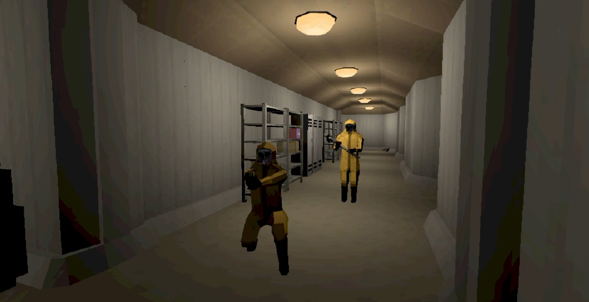

Project
The Arctic Research Program (T.A.R.P)
Concept
T.A.R.P is a 3-6 player co-op horror survival game set in a remote Arctic research station. Players must cooperate in a unique assymetrical way to finish missions, gain better equipment, and delve deeper into the overrun facility .

Overseer & Cleaners
Overseer
Being a assymetrical co-op game, you get to chose on of your friends to play as an overseer. The overseer acts like a team leader, guiding the players through the facility and trying to make sure everyone survives. The overseer does not enter the map like the cleaners dressed in hazmat suits do. Overseers instead sit on a desktop like mini-game with a complete map of the facility. The overseers get clues to how the cleaners will reach the objectives and warn them of potential dangers.
Cleaners
Dressed in hazmat suits and gasmasks, the cleaners are the players that enter the facility to complete objectives. The cleaners are responsible for navigating the overrun facility, slowly restoring the facility to its original state. Dont get fooled by the name "cleaner", their work is quite dangerous. Sometimes cleaning means gathering documents and removing contaminated materials. Other times it means stopping foreign creatures, avoiding unknown entities, gathering lost research documents
Technical Features
The game is built in Unity using C# scripting and the Unity Engine's networking capabilities. Down below are some of the technical features explained:
Procedural Generation
Room Prefabs and Breadth-first search
The maps are procedurally generated using room prefabs with different sizes, layouts and content. The algorithm places the map room by room using BFS, and connects them using the rooms "sockets". The sockets are the blue and red boxes you see in the video above. Sockets can only connect to sockets of the same size, and the opposite color. The map.cs scripts saves the map layout in a RectInt footprint to check for overlaps. The rooms are made and measured to fit a standard so that rooms are perfectly aligned with unitys units to avoid gaps or overlaps.
Backtracking
The algorithm also has different settings that the map generator will try to meet during generation. For example if it doesnt reach its goal room count, it will backtrack, and try a different configuration
Caps and spawning
When the layout is complete it will then enter a closing process, placing "caps". A cap can be a doorway, a hall opening. It essentially creates the connection between 2 rooms using a cap prefab, or for sockets that were never connected it closes them using walls. It will also spawn entities and items according to the map settings when all caps are placed and the first player spawns in
Networking
Using unitys Multiplayer Center and the Netcode for GameObjects package, the game will allow players to host lobbies for themselves and their friends. The shared gameplay aspects are decided by the server, like for example: damage, health, items, enemies/entities, and objects in the map. Each client owns their own players network object, and the server syncs the position and state of each player. Using this system the host essentially becomes the server, and the other players are clients.
RPC (Remote Procedure Calls)
Everytime a player performs an action that needs to be synchronized between the clients, it sends a request to the server. The server then performs the action requested
Player
Movement
The player moves using unitys input system and a character controller, calculating velocity and drag in a script. With a classic groundcheck using the normal of the object below it to determine if the player is grounded or not instead of using a ground layer. The player can crouch, jump, sprint in the current iteration.
Interaction
The players have a interaction system using raycasting to detect objects that have the IInteractable interface implemented. Using the IInteractable.cs interface and the InteractableBase.cs it allows for interactable objects to define their own behavior.
Visuals
The player consist of a FPS model and a seperate remote model that are fully animated with their own animations. When spawning the client first checks what player is their own, and disables the remote rig visually. It does the same for players who are not their own, but instead disables their FPS model.